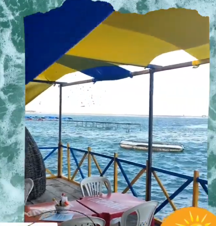

Portal da Barra
Descrição
Sim, a praia de Barra Nova é uma praia tranquila e charmosa localizada no município de Cascavel, no litoral leste do Ceará, cerca de 70 km de Fortaleza. Ela é conhecida por sua beleza natural, com dunas, lagoas, e o encontro do Rio Choró com o mar, o que cria paisagens únicas e uma experiência bem diferente. A praia atrai turistas que buscam um destino mais tranquilo e menos movimentado. As águas são calmas, tornando o local ideal para quem quer relaxar ou praticar esportes aquáticos como kitesurf. Barra Nova também oferece passeios de buggy pelas dunas e, para quem gosta de gastronomia local, há barracas que servem peixes frescos e frutos do mar.
localização
A praia de Barra Nova está localizada no município de Cascavel, no litoral leste do estado do Ceará, Brasil. Geograficamente, ela está posicionada a aproximadamente 70 km a sudeste da capital, Fortaleza, com fácil acesso pela rodovia CE-040, que conecta a região ao centro urbano de Fortaleza. Barra Nova está situada no encontro do Rio Choró com o Oceano Atlântico, o que cria um ambiente geográfico único. A foz do rio forma uma bela área de manguezais, estuários e lagunas, onde o rio se encontra com o mar, criando uma paisagem natural espetacular. Suas coordenadas geográficas aproximadas são: - Latitude: 4°25' Sul - Longitude: 38°12' Oeste A praia é cercada por dunas, que em muitos pontos se estendem até a orla, proporcionando uma vista panorâmica com areia branca e vegetação de restinga. A posição de Barra Nova, por estar no litoral leste, faz com que ela receba ventos alísios constantes, o que favorece a prática de esportes como kitesurf e windsurf. Além disso, a proximidade com o Rio Choró cria uma barreira natural que divide a praia em trechos de mar aberto e áreas mais protegidas pelo estuário, o que garante águas calmas em determinados pontos, ideais para banho. Por estar inserida em uma área com menor urbanização, a praia conserva grande parte de seu ecossistema natural, tornando-a um destino perfeito para quem busca tranquilidade e contato direto com a natureza.
Barraca "Ô Lucivaldo"
A barraca de praia "Õ Lucivaldo" é um ponto tradicional em Barra Nova, conhecida por sua hospitalidade e ambiente acolhedor, refletindo o estilo simples e descontraído da região. Localizada à beira-mar, a barraca oferece aos visitantes uma experiência autêntica da culinária local, com destaque para pratos à base de peixes e frutos do mar frescos, pescados na região. O ambiente é rústico, com mesas e cadeiras dispostas sob uma cobertura de palha, que proporciona sombra e alívio do calor, permitindo que os clientes apreciem a brisa do mar enquanto saboreiam os pratos. Entre as opções mais populares estão o peixe frito, a peixada cearense, camarões grelhados e lagostas, além de acompanhamentos típicos como baião de dois, macaxeira frita e saladas. "Õ Lucivaldo" também serve bebidas geladas, como cervejas, caipirinhas e sucos naturais, ideais para refrescar quem está aproveitando o dia na praia. O serviço é atencioso e familiar, com Lucivaldo muitas vezes presente no local, garantindo que todos se sintam à vontade e bem atendidos. Além da comida e bebida, o local tem uma vista privilegiada do pôr do sol e é um ótimo ponto para relaxar após passeios pelas dunas ou mergulhos nas águas calmas da praia de Barra Nova. A barraca é um destino frequente para moradores locais e turistas que buscam uma boa refeição à beira-mar em um ambiente tranquilo e natural.
Barraca "Ô Veinho"
A barraca de praia "Ô Veinho" é um ponto emblemático da praia de Barra Nova, muito procurada por sua atmosfera simples e aconchegante, que transmite a essência da vida à beira-mar no Ceará. Situada em uma área estratégica da orla, a barraca oferece uma vista privilegiada tanto do oceano quanto do encontro do Rio Choró com o mar, permitindo que os visitantes apreciem a beleza natural do lugar enquanto desfrutam de uma excelente refeição. O cardápio da "Ô Veinho" é variado, com uma forte ênfase nos sabores regionais, especialmente nos pratos de frutos do mar. Entre as opções mais apreciadas estão o caranguejo cozido, os camarões ao alho e óleo e a lagosta grelhada. Os pratos são sempre servidos frescos e com acompanhamentos típicos, como arroz de leite, macaxeira frita e farofa. O local também oferece opções mais simples, como batata frita e espetinhos, para agradar diferentes paladares. A barraca tem um ambiente rústico e descontraído, com mesas e cadeiras ao ar livre, protegidas por sombreiros ou palhoças de palha, criando um clima relaxante. O "Veinho", proprietário da barraca, é conhecido por seu carisma e pelo atendimento atencioso, sempre disposto a conversar com os clientes e garantir que todos se sintam bem-vindos. Além da excelente comida, a "Ô Veinho" é um ponto de encontro para moradores locais e turistas que buscam um lugar tranquilo para passar o dia, com bebidas geladas, como cervejas, caipirinhas e sucos, complementando a experiência. O ambiente é familiar, e a barraca costuma ser bastante movimentada nos fins de semana e feriados, atraindo quem quer aproveitar o melhor da praia em um lugar acolhedor e autêntico.
Barraca Sol da Barra
A Barraca Sol da Barra é um encantador espaço à beira-mar localizado na praia de Barra Nova, conhecida por sua atmosfera descontraída e acolhedora. Situada em um ponto estratégico da orla, a barraca oferece uma vista deslumbrante do Oceano Atlântico, permitindo que os visitantes desfrutem de um cenário natural deslumbrante enquanto saboreiam suas refeições. O ambiente da Barraca Sol da Barra é caracterizado por uma decoração simples e rústica, com mesas e cadeiras dispostas sob estruturas de palha que proporcionam sombra e conforto. O espaço é ideal para relaxar com a família e amigos, aproveitando a brisa do mar e o som das ondas. O cardápio da barraca é diversificado e destaca-se pela oferta de pratos típicos da culinária cearense, com ênfase em frutos do mar frescos. Os clientes podem saborear opções como peixes grelhados, camarões, mariscos e caldeiradas, todos preparados com ingredientes locais e frescos. Além dos pratos de frutos do mar, a Barraca Sol da Barra também oferece petiscos e acompanhamentos, como macaxeira frita, arroz e farofa, garantindo uma refeição completa e saborosa. As bebidas são uma parte importante da experiência, com uma seleção que inclui cervejas geladas, caipirinhas e sucos naturais, perfeitos para refrescar os visitantes nos dias ensolarados. O atendimento na Barraca Sol da Barra é conhecido por ser amigável e atencioso, com funcionários sempre prontos para receber os clientes com um sorriso e garantir que tenham uma experiência agradável. A combinação de um ambiente agradável, boa comida e um atendimento caloroso torna a Barraca Sol da Barra uma excelente opção para quem busca relaxar e aproveitar a beleza natural da praia de Barra Nova.
Barraca dos Sonhos
A Barraca dos Sonhos é um encantador ponto de encontro à beira-mar na praia de Barra Nova, que atrai tanto moradores locais quanto turistas em busca de uma experiência gastronômica autêntica e relaxante. Localizada em um trecho privilegiado da orla, a barraca oferece uma vista deslumbrante do Oceano Atlântico, tornando-a um lugar perfeito para desfrutar do sol e da brisa do mar. O ambiente da Barraca dos Sonhos é acolhedor e rústico, com mesas e cadeiras dispostas sob sombreados de palha, que criam um clima descontraído e familiar. A decoração é simples, mas charmosa, refletindo a essência da cultura local e proporcionando uma atmosfera relaxante para os visitantes. No cardápio, a barraca se destaca pela variedade de pratos à base de frutos do mar, com especialidades como peixes fritos, camarões na brasa, e caldeiradas. Os pratos são preparados com ingredientes frescos e saborosos, sempre com um toque caseiro, o que agrada a todos os paladares. Além das opções de frutos do mar, a Barraca dos Sonhos também oferece petiscos e acompanhamentos tradicionais, como farofa, saladas e arroz. As bebidas são uma parte importante da experiência, com uma seleção que inclui cervejas geladas, caipirinhas refrescantes e sucos naturais, perfeitos para acompanhar as refeições e refrescar-se no calor do dia. O atendimento na Barraca dos Sonhos é conhecido por ser amigável e atencioso, com funcionários sempre dispostos a fazer os clientes se sentirem em casa. A combinação de um ambiente agradável, boa comida e um atendimento caloroso faz da Barraca dos Sonhos um local imperdível para quem visita a praia de Barra Nova, garantindo momentos de lazer e satisfação em meio à natureza exuberante da região.
Barraca Sol Nascente
A Barraca Sol Nascente é uma charmosa e acolhedora barraca de praia localizada na praia de Barra Nova, conhecida por seu ambiente descontraído e familiar. Situada em um local privilegiado, a barraca proporciona aos visitantes uma vista panorâmica do mar, permitindo que todos desfrutem do belo nascer do sol e do som relaxante das ondas. O espaço da Barraca Sol Nascente é decorado de maneira simples e rústica, com mesas e cadeiras organizadas sob sombreados de palha que oferecem conforto e proteção do sol. O ambiente é ideal para relaxar, seja com a família, amigos ou em um passeio romântico, criando uma atmosfera propícia para momentos de descontração e lazer. O cardápio da barraca é variado e destaca-se pela ênfase em frutos do mar frescos, como peixes grelhados, camarões, e moquecas, além de opções de pratos típicos da culinária cearense. Os pratos são preparados com ingredientes locais de qualidade, e a simplicidade das receitas realça os sabores naturais, agradando a todos os paladares. A Barraca Sol Nascente também oferece uma seleção de petiscos e acompanhamentos, como saladas, farofa e arroz, para complementar as refeições. As bebidas disponíveis incluem cervejas geladas, caipirinhas refrescantes, sucos naturais e refrigerantes, perfeitas para saciar a sede nos dias quentes de verão. O atendimento na Barraca Sol Nascente é marcado pela cordialidade e simpatia, com funcionários sempre prontos para receber os clientes de forma calorosa e atenta. A combinação de um ambiente agradável, excelente gastronomia e um serviço atencioso faz da Barraca Sol Nascente um lugar ideal para relaxar e aproveitar o melhor da praia de Barra Nova, seja durante o dia ou ao pôr do sol.
Barraca do Gildo
A Barraca do Gildo é um conhecido ponto de encontro na praia de Barra Nova, famosa por sua atmosfera acolhedora e seu atendimento amigável. Localizada em um trecho estratégico da orla, a barraca oferece uma bela vista do mar, tornando-a um local ideal para relaxar e apreciar a natureza ao redor. O ambiente da Barraca do Gildo é descontraído, com mesas e cadeiras dispostas sob estruturas de palha que proporcionam sombra e conforto aos visitantes. A decoração é simples, mas charmosa, refletindo a essência da vida praiana e criando um espaço convidativo para famílias, grupos de amigos e casais. O cardápio da barraca é diversificado, com uma forte ênfase na culinária local, especialmente em pratos de frutos do mar. Os clientes podem desfrutar de opções como peixes fritos, camarões, lagostas e caldeiradas, todos preparados com ingredientes frescos e de qualidade. A Barraca do Gildo também oferece petiscos e acompanhamentos tradicionais, como farofa, arroz e saladas, garantindo uma refeição saborosa e completa. As bebidas são uma parte importante da experiência, com uma seleção que inclui cervejas geladas, caipirinhas e sucos naturais, perfeitos para acompanhar as refeições e refrescar-se nos dias quentes. O atendimento na Barraca do Gildo é conhecido por ser cordial e eficiente, com Gildo, o proprietário, frequentemente presente e interagindo com os clientes, o que acrescenta um toque pessoal à experiência. A combinação de um ambiente agradável, uma deliciosa gastronomia e um atendimento atencioso faz da Barraca do Gildo uma escolha popular para quem visita a praia de Barra Nova, oferecendo momentos de lazer e satisfação à beira-mar.
Barraca Lua Cheia
A Barraca Lua Cheia é um local bastante acolhedor e animado na praia de Barra Nova, conhecida por sua atmosfera vibrante e sua localização privilegiada à beira-mar. A barraca oferece uma vista espetacular do oceano, permitindo que os visitantes desfrutem do pôr do sol e do clima tropical enquanto saboreiam pratos deliciosos. O ambiente da Barraca Lua Cheia é descontraído e rústico, com mesas e cadeiras dispostas em áreas sombreadas por palhas, criando um espaço confortável e convidativo para os clientes. A decoração é simples, mas charmosa, refletindo a cultura local e a vida à beira-mar, tornando-a um ótimo lugar para relaxar com amigos e família. O cardápio da barraca é variado e foca na culinária local, especialmente em pratos à base de frutos do mar. Os clientes podem encontrar opções como peixes grelhados, camarões, caldeiradas e petiscos saborosos, todos preparados com ingredientes frescos e de qualidade. Além dos pratos principais, a Barraca Lua Cheia oferece uma seleção de acompanhamentos típicos, como farofa, saladas e arroz, garantindo uma refeição completa e deliciosa. As bebidas disponíveis são igualmente atraentes, com uma boa variedade de cervejas geladas, caipirinhas, sucos naturais e refrigerantes, perfeitos para saciar a sede nos dias ensolarados e quentes. O atendimento na Barraca Lua Cheia é amigável e atencioso, com uma equipe sempre disposta a garantir que os clientes tenham uma experiência agradável. A barraca costuma ser um ponto de encontro popular, especialmente durante os fins de semana e feriados, criando um clima festivo e acolhedor. A combinação de um ambiente relaxante, deliciosa comida, e um atendimento caloroso faz da Barraca Lua Cheia um local imperdível para quem visita a praia de Barra Nova, proporcionando momentos de lazer e satisfação em um cenário natural deslumbrante.
Barraca Encontro das águas
A Barraca Encontro das Águas é um renomado ponto de encontro na praia de Barra Nova, famosa por sua localização privilegiada e pela atmosfera acolhedora que proporciona aos visitantes. Situada perto do encontro do Rio Choró com o mar, a barraca oferece uma vista espetacular da natureza ao redor, criando um cenário perfeito para relaxar e desfrutar da beleza da região. O ambiente da Barraca Encontro das Águas é rústico e descontraído, com mesas e cadeiras dispostas ao ar livre, sob sombreados de palha que proporcionam conforto e proteção do sol. A decoração é simples, refletindo a essência da vida praiana e criando um espaço convidativo para famílias, amigos e casais. O cardápio da barraca é diversificado e destaca-se pela variedade de pratos à base de frutos do mar. Os visitantes podem saborear opções como peixes frescos, camarões, mariscos e caldeiradas, todos preparados com ingredientes frescos e de qualidade. Além das especialidades do mar, a Barraca Encontro das Águas também oferece petiscos e acompanhamentos típicos da culinária cearense, como farofa, saladas e arroz, garantindo refeições saborosas e completas. As bebidas disponíveis incluem uma seleção de cervejas geladas, caipirinhas refrescantes, e sucos naturais, ideais para acompanhar as refeições e refrescar-se durante os dias quentes. O atendimento na Barraca Encontro das Águas é conhecido por ser amigável e atencioso, com uma equipe pronta para acolher os clientes e garantir que tenham uma experiência agradável. A barraca se destaca por seu ambiente familiar e acolhedor, tornando-se um local perfeito para quem deseja aproveitar um dia de sol na praia. A combinação de um cenário natural deslumbrante, uma deliciosa gastronomia e um atendimento caloroso faz da Barraca Encontro das Águas uma excelente opção para quem visita a praia de Barra Nova, proporcionando momentos de lazer e satisfação em um ambiente único.
Barraca Pé na Areia
A Barraca Pé na Areia é um popular ponto de encontro na praia de Barra Nova, conhecida por sua localização privilegiada, onde os visitantes podem literalmente relaxar com os pés na areia. Com uma vista deslumbrante do mar e do horizonte, a barraca oferece uma experiência única de contato direto com a natureza, ideal para quem busca um ambiente descontraído e acolhedor. O ambiente da Barraca Pé na Areia é bastante informal, com mesas e cadeiras dispostas ao ar livre, permitindo que os clientes aproveitem a brisa do mar enquanto saboreiam suas refeições. A decoração é simples e rústica, refletindo a essência da vida à beira-mar, criando uma atmosfera acolhedora e relaxante. O cardápio da barraca é diversificado e foca na culinária local, com uma ênfase especial em pratos à base de frutos do mar. Os visitantes podem degustar opções como peixes frescos, camarões, moquecas e caldeiradas, preparados com ingredientes frescos e saborosos. Além disso, a Barraca Pé na Areia oferece uma seleção de petiscos, como batatas fritas, porções de iscas de peixe e outras iguarias, perfeitas para acompanhar as bebidas. Falando em bebidas, a barraca conta com uma boa variedade, incluindo cervejas geladas, caipirinhas refrescantes, e sucos naturais, que são ideais para se refrescar durante os dias quentes de sol. O atendimento na Barraca Pé na Areia é conhecido por ser amigável e atencioso, com uma equipe sempre disposta a fazer os clientes se sentirem bem-vindos. A barraca costuma ser um local animado, especialmente durante os fins de semana, criando um clima festivo que atrai tanto os moradores locais quanto os turistas. Com sua combinação de um ambiente relaxante, boa comida e um atendimento caloroso, a Barraca Pé na Areia é uma excelente escolha para quem visita a praia de Barra Nova, proporcionando momentos de diversão e descontração em um cenário natural deslumbrante.
Barraca Pedra dos Vencedores
A Barraca Pedra dos Vencedores é um estabelecimento único e charmoso localizado na praia de Barra Nova, destacando-se por sua proximidade com as famosas formações rochosas da região, o que a torna um ponto de referência para visitantes. Com uma vista panorâmica para o oceano, a barraca proporciona uma experiência incrível de conexão com a natureza, ideal para quem busca momentos de paz e tranquilidade à beira-mar. O ambiente da Barraca Pedra dos Vencedores é rústico e simples, com mesas e cadeiras dispostas em uma área aberta, permitindo que os clientes sintam a areia sob os pés e a brisa do mar enquanto aproveitam suas refeições. O local também conta com áreas cobertas de palha para oferecer sombra nos dias mais quentes, mantendo um clima agradável para todos os visitantes. O cardápio é voltado para a culinária regional, com uma forte ênfase em pratos à base de frutos do mar frescos. Os clientes podem saborear iguarias como peixe grelhado, camarões na manteiga de alho, lagostas e outras delícias típicas da região. Para acompanhar, a barraca também oferece uma seleção de petiscos e acompanhamentos como macaxeira frita, farofa e saladas. No quesito bebidas, a Barraca Pedra dos Vencedores não deixa a desejar, oferecendo cervejas geladas, sucos naturais e caipirinhas refrescantes, perfeitas para um dia ensolarado à beira-mar. O atendimento é outro ponto forte da barraca, com funcionários conhecidos por sua hospitalidade e simpatia, sempre prontos para garantir que os visitantes tenham uma experiência agradável. A localização, aliada ao excelente atendimento e à gastronomia saborosa, faz da Barraca Pedra dos Vencedores um lugar especial para quem busca desfrutar das belezas naturais de Barra Nova, em um ambiente tranquilo e acolhedor.
Pesca Semi-Industrial
A pesca na região de Barra Nova é caracterizada por sua abordagem semi-industrial, com foco na captura de arraias e lagostas, dois dos frutos do mar mais apreciados na culinária local e regional. A atividade é significativa, não apenas no abastecimento das barracas de praia e restaurantes da área, mas também no fornecimento desses produtos para outros mercados, incluindo o comércio baiano, destacando a importância econômica do setor pesqueiro para a região. O porto de Barra Nova desempenha um papel fundamental nesse processo, sendo um ponto estratégico para a exportação dos frutos do mar capturados, especialmente as lagostas, que são de alta demanda. A pesca semi-industrial local combina práticas tradicionais com técnicas mais modernas, aumentando a produtividade e a qualidade dos produtos, sem perder a essência da cultura pesqueira local. Essa estrutura de pesca fortalece a economia da região e contribui para o desenvolvimento de toda a comunidade, mantendo uma conexão direta com o mar, que é uma parte vital da identidade de Barra Nova.
Pesca Artesanal
A pesca artesanal também desempenha um papel essencial na economia e na cultura de Barra Nova. Os pescadores locais, utilizando métodos tradicionais como redes, tarrafas e pequenas embarcações, mantêm uma prática que atravessa gerações. Essa atividade é uma fonte de subsistência para muitas famílias, além de fornecer peixes frescos para o consumo local e comercialização. A pesca artesanal é uma expressão direta da relação íntima entre a comunidade e o mar, respeitando os ciclos naturais e utilizando técnicas sustentáveis que preservam os recursos marítimos para as futuras gerações. Enquanto a pesca semi-industrial foca em maiores volumes e espécies específicas, como arraia e lagosta, a pesca artesanal contribui com uma variedade de peixes e frutos do mar, que abastecem tanto os lares quanto as barracas e mercados da região. Essa diversidade de práticas pesqueiras enriquece ainda mais a economia e o estilo de vida da região de Barra Nova, proporcionando uma forte conexão com o mar e seus recursos.
Porto
O porto de Barra Nova é uma infraestrutura vital para a região, funcionando como um ponto central para as atividades de pesca e transporte marítimo. Situado em uma localização estratégica, o porto serve como uma base de apoio tanto para a pesca artesanal quanto para a pesca semi-industrial, facilitando o escoamento dos produtos marítimos capturados, como arraias e lagostas, que são amplamente exportados, inclusive para o comércio baiano. O porto também é um ponto de encontro para pescadores locais, onde embarcações de pequeno e médio porte atracam diariamente. A movimentação no porto reflete a dinâmica econômica da região, com barcos chegando carregados de frutos do mar frescos que abastecem o comércio local e também mercados mais distantes. Além de seu papel econômico, o porto de Barra Nova é parte da paisagem e da vida cotidiana da comunidade. Ele representa a conexão direta com o mar, simbolizando a importância histórica e cultural da pesca para a região. Em dias de pesca, é comum ver as atividades no porto começando ao amanhecer, com pescadores preparando suas embarcações e equipamentos. O porto, ao longo dos anos, consolidou-se como um centro logístico de grande relevância, tanto para o sustento local quanto para a exportação de produtos marítimos de alta qualidade.
MEC
O MiraMar Esporte Clube (MEC) é uma parte importante da comunidade de Barra Nova, funcionando como um ponto de encontro para os moradores que compartilham a paixão pelo esporte e a vida social ativa. O clube desempenha um papel fundamental na promoção de atividades esportivas e de lazer na região, fortalecendo o senso de união entre os habitantes. Seja através de campeonatos locais de futebol, eventos comunitários ou até mesmo atividades recreativas para todas as idades, o MEC se tornou um símbolo de integração e lazer para Barra Nova. O nome "MiraMar" reflete a forte conexão do clube com o ambiente costeiro, destacando a presença do mar como parte do estilo de vida local.
kitesurf
A prática de KiteSurf em Barra Nova é uma das atividades esportivas que mais atraem aventureiros, tanto nativos quanto visitantes internacionais, especialmente da Europa e América do Norte. A praia oferece as condições ideais para o esporte, com ventos constantes e uma extensa faixa de areia, tornando-a um local privilegiado para os amantes de esportes aquáticos. Durante o ano todo, é comum ver as coloridas pipas de KiteSurf enfeitando o céu, com praticantes aproveitando as ondas e os ventos. O cenário é um verdadeiro paraíso para quem busca adrenalina e contato com a natureza, além de ser uma grande oportunidade para o intercâmbio cultural, já que muitos estrangeiros visitam Barra Nova para a prática do KiteSurf. Se você quiser incluir algo mais sobre essa prática ou como ela se integra ao turismo local, estou à disposição!
Arena Encontro
A Arena Encontro, localizada em Barra Nova, é o palco de emocionantes torneios de futevôlei que atraem tanto moradores quanto visitantes. A quadra de areia oferece um espaço ideal para a prática desse esporte, que é bastante popular na região. Os torneios de futevôlei realizados na arena são momentos de grande integração e competição saudável, proporcionando entretenimento e lazer para a comunidade. Esses eventos também trazem uma atmosfera vibrante à praia, com jogos intensos, muita torcida e um clima de camaradagem entre os participantes. A Arena Encontro tornou-se, assim, um ponto de referência para o esporte na cidade, valorizando ainda mais a vida esportiva em Barra Nova.
Escape Pousada
A Escape Pousada em Barra Nova é um refúgio encantador à beira-mar, que oferece aos visitantes uma experiência relaxante e imersiva na natureza. Conhecida por seu ambiente tranquilo e acolhedor, a pousada é ideal para quem busca escapar da rotina e aproveitar momentos de descanso em um cenário paradisíaco. Principais características da Escape Pousada: 1. Localização Privilegiada: A pousada está situada em uma área privilegiada de Barra Nova, com acesso direto à praia, proporcionando aos hóspedes a possibilidade de caminhar poucos metros para se refrescar no mar ou apreciar a paisagem costeira. O local também é cercado por vegetação nativa, criando uma atmosfera de paz e privacidade. 2. Acomodações Confortáveis: A Escape Pousada oferece uma variedade de acomodações que combinam simplicidade e conforto. Os quartos são decorados com elementos rústicos e praianos, com camas confortáveis, ar-condicionado e varandas privativas com vista para o mar ou os jardins. Cada detalhe foi pensado para proporcionar uma estadia relaxante, com a brisa do mar sempre presente. 3. Gastronomia Local: A pousada serve um café da manhã delicioso, com uma seleção de frutas frescas, pães caseiros, bolos e sucos naturais. Além disso, a pousada tem um restaurante próprio que oferece pratos regionais, com destaque para os frutos do mar, preparados com ingredientes frescos e locais. 4. Ambiente Aconchegante: A Escape Pousada se destaca pelo ambiente familiar e acolhedor. Os hóspedes são recebidos com simpatia e atenção, e a equipe está sempre disponível para garantir que a estadia seja o mais confortável possível. É o tipo de lugar onde os visitantes se sentem em casa, graças ao atendimento personalizado e à hospitalidade local. 5. Lazer e Atividades: Para os que procuram um pouco mais de ação, a pousada pode organizar atividades como passeios de buggy, trilhas e passeios de barco, permitindo que os visitantes explorem a beleza natural de Barra Nova e seus arredores. Também é um excelente ponto de partida para praticantes de esportes aquáticos como o KiteSurf. 6. Decoração e Atmosfera: A Escape Pousada tem um estilo que combina o rústico e o moderno, criando um ambiente que harmoniza com o cenário litorâneo. O uso de materiais como madeira e palha nas áreas comuns, juntamente com tons neutros e terrosos, reforçam a sensação de aconchego. A Escape Pousada é, sem dúvida, uma excelente escolha para quem deseja um refúgio à beira-mar, com conforto e contato direto com a natureza. Se você busca descansar em um local tranquilo, longe da agitação, a Escape Pousada é o lugar ideal.
Pousada Bons Ventos
A Pousada Bons Ventos em Barra Nova é um local charmoso que se destaca pelo ambiente acolhedor e pela proximidade com a natureza, oferecendo aos visitantes uma experiência autêntica de descanso e lazer. Situada em uma região tranquila, a pousada é bastante popular entre os turistas que procuram relaxar, especialmente aqueles interessados em esportes aquáticos, como o KiteSurf, muito praticado nas redondezas. Características principais da Pousada Bons Ventos: 1. Proximidade com a Praia: Localizada a poucos metros da praia, a Pousada Bons Ventos oferece fácil acesso à areia e ao mar, permitindo aos hóspedes desfrutar de passeios relaxantes e da prática de esportes aquáticos. A proximidade com o mar faz dela uma excelente escolha tanto para quem busca relaxar à beira-mar quanto para aqueles que querem se aventurar nas ondas. 2. Conforto nas Acomodações: As acomodações da Pousada Bons Ventos são simples, mas confortáveis, com decoração em estilo praiano. Os quartos são equipados com ar-condicionado, TV, Wi-Fi gratuito e, em alguns casos, varandas com vista para o mar ou para os jardins, proporcionando uma estadia tranquila e relaxante. 3. Café da Manhã Regional: A pousada oferece um delicioso café da manhã regional, com frutas frescas, pães, bolos e sucos naturais. O cardápio privilegia ingredientes locais e frescos, dando aos hóspedes um verdadeiro sabor da culinária cearense logo ao começar o dia. 4. Ambiente Aconchegante e Familiar: O atendimento da Pousada Bons Ventos é um dos seus maiores destaques, com uma equipe simpática e sempre pronta para ajudar. O ambiente acolhedor e familiar faz com que os visitantes se sintam em casa, recebendo um tratamento atencioso e personalizado. 5. Atividades e Lazer: A pousada pode auxiliar na organização de passeios pela região, como tours de buggy, trilhas ecológicas e passeios de barco. Além disso, a pousada é uma ótima opção para praticantes de esportes como o KiteSurf, aproveitando os bons ventos que sopram constantemente na região, daí o nome da pousada. 6. Contato com a Natureza: A Pousada Bons Ventos é cercada por jardins bem cuidados, onde os hóspedes podem relaxar em redes e aproveitar a tranquilidade do ambiente. A brisa constante e o som das ondas completam a experiência de contato direto com a natureza, criando uma atmosfera de paz. A Pousada Bons Ventos é ideal para quem busca uma estadia tranquila, com excelente localização e atendimento amigável. Ela atrai tanto famílias quanto viajantes que buscam um refúgio próximo ao mar e à natureza.
Pousada Por Do Sol

A Pousada Pôr do Sol em Barra Nova é um refúgio acolhedor que oferece uma experiência relaxante e uma vista deslumbrante para o mar, especialmente durante o pôr do sol, que dá nome à pousada. Ela é perfeita para quem busca um ambiente tranquilo e confortável, ideal para momentos de descanso à beira-mar. Características principais da Pousada Pôr do Sol: 1. Vista Privilegiada do Pôr do Sol: Como o próprio nome sugere, um dos maiores atrativos da pousada é a vista espetacular do pôr do sol que os hóspedes podem apreciar diretamente das áreas comuns ou até de alguns quartos. A localização à beira-mar proporciona um cenário inesquecível para esse espetáculo diário da natureza. 2. Acomodações Confortáveis: A pousada oferece quartos aconchegantes, equipados com ar-condicionado, Wi-Fi, TV e algumas acomodações possuem varanda com vista para o mar. A decoração é simples e praiana, criando um ambiente relaxante, ideal para quem busca tranquilidade. 3. Ambiente Familiar e Aconchegante: A Pousada Pôr do Sol é gerida por uma equipe simpática e atenciosa, que faz com que os hóspedes se sintam em casa. O atendimento personalizado e amigável é um dos destaques do local, atraindo tanto turistas quanto casais e famílias que buscam uma estadia tranquila. 4. Café da Manhã Regional: A pousada serve um delicioso café da manhã com produtos típicos da região, como frutas tropicais frescas, pães caseiros, bolos e sucos naturais. É o início perfeito para um dia de descanso ou exploração da praia e dos arredores. 5. Contato com a Natureza: Cercada por vegetação e com fácil acesso à praia, a Pousada Pôr do Sol proporciona um ambiente de paz e sossego. A área externa inclui jardins com redes, onde os hóspedes podem relaxar e sentir a brisa do mar enquanto aproveitam a beleza natural do lugar. 6. Atividades e Lazer: Além da proximidade com o mar, a pousada está bem localizada para quem quer explorar a região. Passeios de buggy, caminhadas pela praia, e esportes aquáticos como o KiteSurf estão entre as atividades que podem ser organizadas. A Pousada Pôr do Sol é o lugar ideal para aqueles que desejam apreciar a beleza natural de Barra Nova, relaxar em um ambiente familiar e, claro, assistir ao espetáculo diário do pôr do sol de um dos melhores pontos da região.
Pousada Sol Da Barra
A Pousada Sol da Barra é um destino encantador em Barra Nova, ideal para quem busca relaxar e aproveitar a beleza natural da região. Com sua localização privilegiada próxima à praia e um ambiente acolhedor, a pousada oferece conforto e tranquilidade para turistas que desejam uma estadia tranquila à beira-mar. Características principais da Pousada Sol da Barra: 1. Localização à Beira-Mar: Situada em uma área estratégica, a Pousada Sol da Barra está a poucos passos da praia, proporcionando fácil acesso à areia e ao mar. Os hóspedes podem desfrutar da vista e da brisa marítima diretamente da pousada, o que a torna um local perfeito para quem busca proximidade com a natureza. 2. Acomodações Aconchegantes: Os quartos da Pousada Sol da Barra são confortáveis e bem equipados, contando com ar-condicionado, TV, frigobar e Wi-Fi gratuito. A decoração é simples e acolhedora, com elementos que refletem o estilo de vida praiano e garantem uma estadia confortável para os visitantes. 3. Ambiente Familiar: A pousada é conhecida por seu ambiente familiar e amigável, onde os hóspedes são tratados com atenção e cuidado. A equipe local oferece um atendimento personalizado, sempre pronta para auxiliar e fazer com que todos se sintam em casa. 4. Café da Manhã Regional: O café da manhã servido na pousada é um dos destaques, com uma seleção de pratos típicos da região, incluindo frutas frescas, pães, bolos e sucos naturais. O cardápio é pensado para oferecer uma refeição leve e saborosa, perfeita para começar o dia com energia. 5. Lazer e Atividades: Além da proximidade com a praia, a pousada é um ótimo ponto de partida para explorar Barra Nova. A equipe pode ajudar a organizar passeios de buggy, visitas às atrações locais e atividades aquáticas, como KiteSurf. Para quem busca relaxar, a pousada oferece áreas comuns com redes e espaços ao ar livre, onde é possível apreciar a tranquilidade do local. 6. Ambiente Rústico e Agradável: A Pousada Sol da Barra é decorada em estilo rústico e praiano, com elementos de madeira e cores neutras que harmonizam com o cenário natural. A área externa é cercada por jardins bem cuidados, criando um ambiente relaxante para os hóspedes. A Pousada Sol da Barra é uma excelente escolha para quem deseja aproveitar o melhor de Barra Nova, seja para relaxar em um ambiente familiar e tranquilo ou para explorar as belezas naturais da região.
Suites Praia Mar
A Suítes Praia Mar em Barra Nova é uma opção de hospedagem prática e confortável, ideal para quem procura um ambiente simples e acolhedor, com fácil acesso à praia e às atrações da região. Com uma atmosfera tranquila e familiar, essa pousada oferece suítes equipadas para garantir uma estadia agradável aos seus hóspedes. Principais características das Suítes Praia Mar: 1. Proximidade com a Praia: Localizada a uma curta distância da praia, as Suítes Praia Mar proporcionam fácil acesso à areia e ao mar, permitindo que os hóspedes possam desfrutar do ambiente litorâneo a qualquer momento. A brisa constante e o som das ondas completam o cenário relaxante. 2. Acomodações Simples e Confortáveis: As suítes são bem equipadas com o essencial para uma estadia tranquila. Elas incluem ar-condicionado, frigobar, TV e Wi-Fi, proporcionando conforto após um dia de passeios ou atividades na praia. A decoração é prática, com móveis funcionais que refletem o estilo praiano. 3. Café da Manhã Caseiro: A pousada serve um café da manhã simples, com itens tradicionais como pães, bolos e frutas da estação. É uma forma leve e nutritiva de começar o dia antes de aproveitar as atividades à beira-mar ou explorar a região. 4. Ambiente Familiar e Acolhedor: As Suítes Praia Mar se destacam pelo atendimento atencioso e pelo ambiente familiar. A equipe é simpática e sempre disposta a ajudar, criando uma atmosfera aconchegante onde os hóspedes se sentem bem-vindos e à vontade. 5. Lazer e Atividades: Além da proximidade com a praia, a pousada é uma excelente base para explorar as atividades locais, como passeios de buggy, caminhadas pela praia ou a prática de esportes aquáticos. As Suítes Praia Mar também estão próximas de algumas das barracas de praia, onde os hóspedes podem experimentar a culinária local e relaxar à beira-mar. 6. Espaço ao Ar Livre: As áreas comuns da pousada incluem um pequeno jardim onde os hóspedes podem relaxar após um dia de atividades. O espaço é ideal para descansar em um ambiente tranquilo e aproveitar a brisa do litoral. A Suítes Praia Mar oferece uma experiência prática e relaxante para quem deseja curtir Barra Nova de forma simples e acessível, sem abrir mão do conforto e da proximidade com a praia.